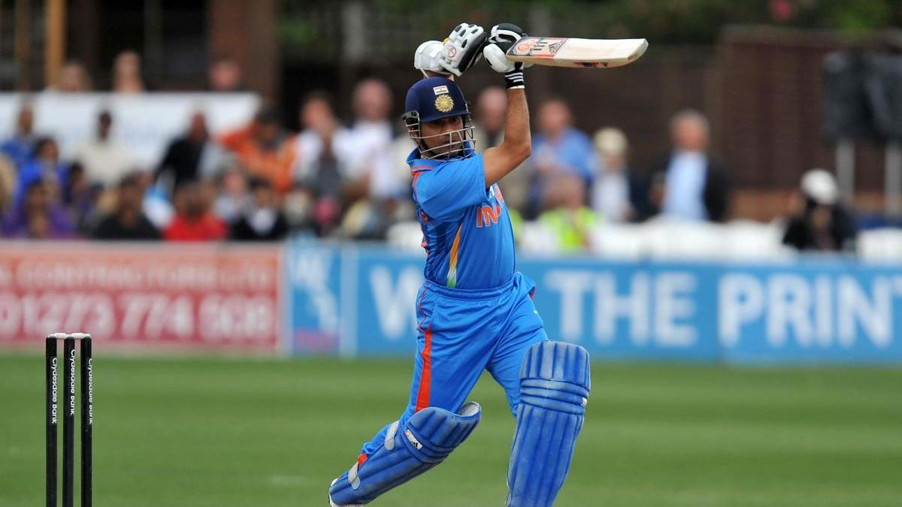

Sachin Ramesh Tendulkar
The Little Master

Sachin Tendulkar plays a classic cover drive
National Honours
- 1994 – Arjuna Award, by the Government of India in recognition of his outstanding achievement in sports.
- 1997–98 – Rajiv Gandhi Khel Ratna, India's highest honour given for achievement in sports.
- 1999 – Padma Shri, India's fourth-highest civilian award.
- 2001 – Maharashtra Bhushan Award, Maharashtra State's highest Civilian Award.
- 2008 – Padma Vibhushan, India's second-highest civilian award.
- 2014 – Bharat Ratna, India's highest civilian award.
Other Honours
- 1997 – Wisden Cricketer of the Year.
- 1998, 2010 – Wisden Leading Cricketer in the World.
- 2002 – In commemorating Tendulkar's feat of equalling Don Bradman's 29 centuries in Test Cricket,
automotive company Ferrari invited him to its paddock in Silverstone on the eve of the British Grand Prix on 23 July,
to receive a Ferrari 360 Modena from the F1 world champion Michael Schumacher. - 2003 – Player of the tournament in 2003 Cricket World Cup.
- 2004, 2007, 2010 – ICC World ODI XI.
- 2006-07, 2009-10 - Polly Umrigar Award for International cricketer of the year
- 2009, 2010, 2011 – ICC World Test XI.
- 2010 – Outstanding Achievement in Sport and the Peoples Choice Award at The Asian Awards in London.
- 2010 – Sir Garfield Sobers Trophy for cricketer of the year.
- 2010 – LG People's Choice Award.
- 2010 – Made an Honorary group captain by the Indian Air Force.
- 2011 – Castrol Indian Cricketer of the Year award.
- 2012 – Wisden India Outstanding Achievement award.
- 2012 – Honorary Member of the Order of Australia, given by the Australian government.
- 2013 – Indian Postal Service released a stamp of Tendulkar and he became the second Indian
after Mother Teresa to have such stamp released in their lifetime. - 2014 – ESPNCricinfo Cricketer of the Generation
- 2017 – The Asian Awards Fellowship Award at the 7th Asian Awards.
- 2019 – Inducted into the ICC Cricket Hall of Fame
- 2020 – Laureus World Sports Award for Best Sporting Moment (2000–2020)
If you have time, you should read more about this incredible human being on his Wikipedia entry.